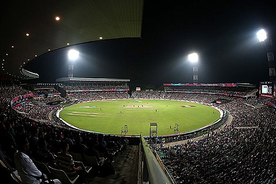

Rohit Gurunath Sharma (born 30 April 1987) is an Indian international cricketer who is the current captain of the Indian national team. A right-handed opening batsman and an occasional right-arm off break bowler, he plays for Mumbai in domestic cricket. He captains Mumbai Indians in the Indian Premier League and they have won the tournament a record five times under his leadership.

Cricket is a bat-and-ball game played between two teams of eleven players each on a field at the centre of which is a 22-yard (20-metre) pitch with a wicket at each end, each comprising two bails balanced on three stumps. The game proceeds when a player on the fielding team, called the bowler, "bowls" (propels) the ball from one end of the pitch towards the wicket at the other end, with an "over" being completed once they have legally done so six times. The batting side has one player at each end of the pitch, with the player at the opposite end of the pitch from the bowler aiming to strike the ball with a bat. The batting side scores runs either when the ball reaches the boundary of the field, or when the two batters swap ends of the pitch, which results in one run. The fielding side's aim is to prevent run-scoring and dismiss each batter (so they are "out", and are said to have "lost their wicket"). Means of dismissal include being bowled, when the bowled ball hits the stumps and dislodges the bails, and by the fielding side either catching a hit ball before it touches the ground, or hitting a wicket with the ball before a batter can cross the crease line in front of the wicket to complete a run. When ten batters have been dismissed, the innings ends and the teams swap roles. The game is adjudicated by two umpires, aided by a third umpire and match referee in international matches.